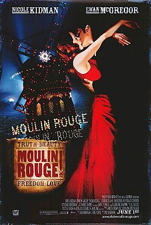

Andrey Cortez
Undergraduate Student
In Computer Science / USP - ICMC
Bachelor in Computer Science / USP - ICMC.
My Favorite movies
|  |
Moulin RougueThe film tells the story of a young English poet/writer, Christian, who falls in love with the star of the Moulin Rouge, cabaret actress and courtesan Satine. It uses the musical setting of the Montmartre Quarter of Paris, France |

|
Mononoke HimePrincess Mononoke is set in the late Muromachi period of Japan, but it includes fantasy elements. The story follows a young Emishi prince named Ashitaka, and his involvement in a struggle between the gods of a forest and the humans who consume its resources. The term mononoke (物の怪), or もののけ, is not a name, but a Japanese word for supernatural, shape-shifting beings that possess people and cause suffering, disease, or death. |

|
Your NameYour Name tells the story of Taki, a high school boy in Tokyo and Mitsuha, a high school girl in a rural town, who suddenly and inexplicably begin to swap bodies. |
CrankThe plot centres on a British hitman in Los Angeles named Chev Chelios who is poisoned and must keep his adrenaline flowing constantly in order to keep himself alive. He does so by various methods including taking drugs and getting into fights, while he tries to track down the man who poisoned him. |
Others Interests
Talking a little more about me:
More than a masters students, a otaku fefdida and makeup lover
<3